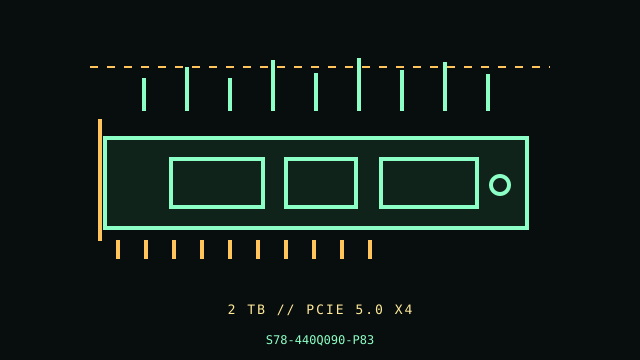

[ PCIE 5.0 NVME // IDENTIFIED PRODUCT ]
MSI SPATIUM M570 PRO FROZR 2 TB (S78-440Q090-P83)
Product-specific catalog record for the manufacturer code below. Performance figures are manufacturer-rated values, not independent test results.

IDENTIFY THE EXACT SKU: Compare the full MPN, label suffix, form factor, firmware and any OEM/security code before applying these notes. Family variations, capacity changes and factory thermal assemblies can materially change ratings and compatibility.
Manufacturer-identified specifications
| Product / MPN | MSI SPATIUM M570 PRO FROZR 2 TB (S78-440Q090-P83) — S78-440Q090-P83 |
|---|---|
| Capacity / form factor | 2 TB; M.2 2280 SSD with oversized integrated passive FROZR heatsink. |
| Interface / lane width | PCIe 5.0 x4. |
| Protocol | NVMe 2.0. |
| Rated performance / endurance | Up to 12,400 MB/s sequential read and 11,800 MB/s sequential write; 1,400 TBW for the 2 TB configuration. |
| Heatsink / revision caveat | Large tall heatsink with heatpipes is part of this model and occupies far more height than a bare M.2 module. Verify GPU, chassis and motherboard cover clearance before purchase/installation. The FROZR configuration is not physically interchangeable with the bare M570 PRO. Gen5 rates require a compatible PCIe 5.0 x4 M.2 host; Gen4 or narrower links negotiate lower. The host UEFI controls boot support. |
Compatibility, installation & service
- Review MSI’s exact M570 PRO FROZR specifications/installation notes plus motherboard layout and clearance before mounting. Do not force a motherboard M.2 cover over the large heatsink or detach the factory thermal assembly. Confirm PCIe 5 x4 CPU/board lane mapping, standoff, case airflow and boot support. Record firmware/SMART and back up before service; monitor temperature in extended writes.
- The FROZR configuration is not physically interchangeable with the bare M570 PRO. Gen5 rates require a compatible PCIe 5.0 x4 M.2 host; Gen4 or narrower links negotiate lower. The host UEFI controls boot support.
- Confirm host boot mode, OS NVMe support, CPU lane generation, socket length/keying, power and controller/backplane qualification from the system manual; physical fit alone does not establish compatibility.
- Before drive replacement, check backup integrity, encryption keys, firmware settings, recovery media and array rebuild plans. Use electrostatic-discharge precautions and never hot-remove unless the host documentation explicitly supports it.
Manufacturer references
- MSI SPATIUM M570 PRO FROZR 2 TB — manufacturer product specification pageManufacturer specification/product reference. Verify the precise SKU and its capacity-specific table, manual or linked downloads against the installed drive label.
- NVM Express — specificationsProtocol standards reference; it does not establish product-specific features or host boot support.
- PCI-SIG — PCI Express specificationsInterface generation/lanes standards reference, not a substitute for the host motherboard/server manual.
Manufacturer peak ratings reflect stated test conditions and may not represent sustained writes in a thermally constrained or cache-exhausted host. Confirm current regional support, service status and warranty terms before use.